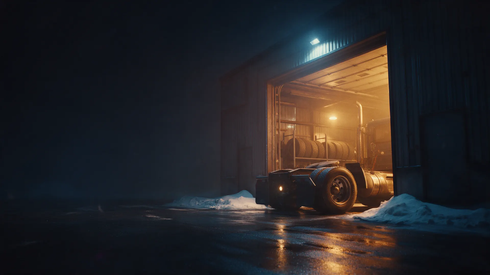
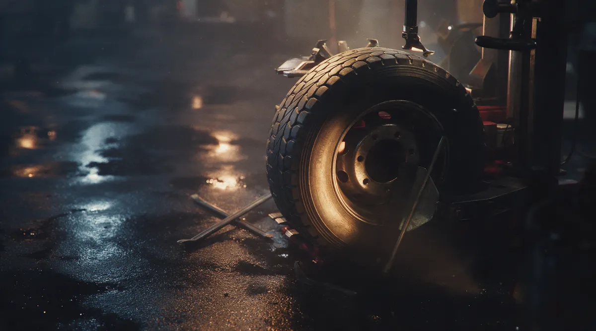
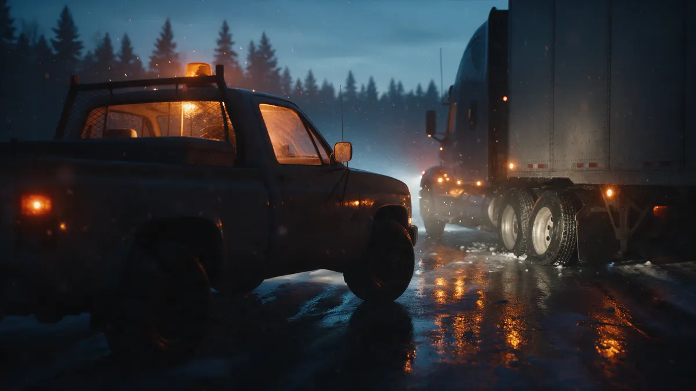
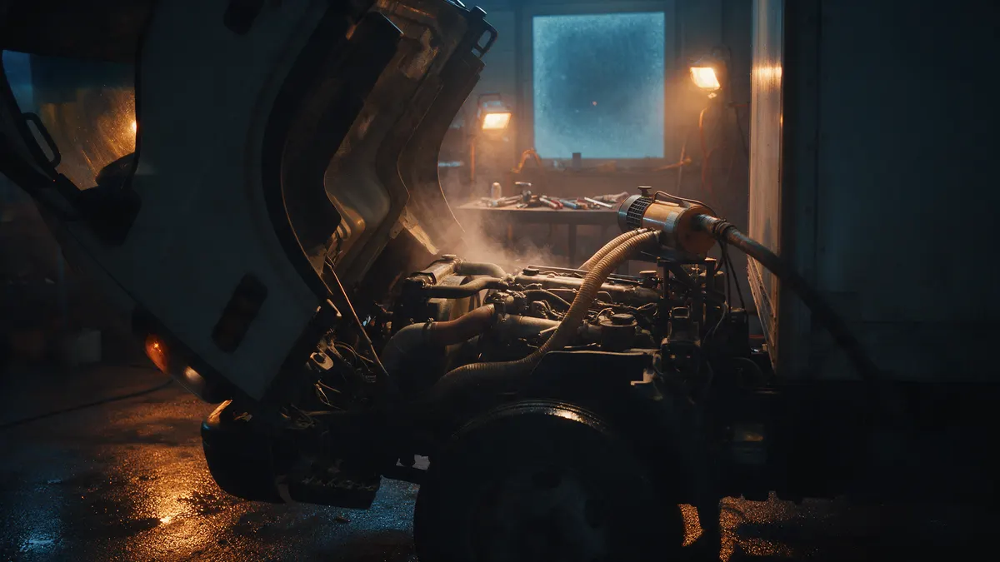

Грузовые шины, отогрев, выезд
Грузовой шиномонтаж в Кандалакше: до 60 тонн, с выездом на трассу
Вулканизация, балансировка, отогрев и техпомощь для фур и спецтехники. Запишитесь на время или позвоните, если колесо спустило в дороге.
- Грузоподъёмность до 60 т
- Срочный выезд и техпомощь
- Пн–Пт 10:00–19:00, Локомотивная, 31

Что входит в обращение
Входит
- Ответ по телефону: беретесь ли и сколько стоит
- Подсказка, как заехать и где встать
- Работа по согласованной цене
Отдельно, если нужно
- Запчасти и материалы
- Нетиповые работы – оценка на месте
- Выезд дальше города – цена по звонку
Цены на основные работы
Цены по данным карточки на Яндекс Картах. Точную сумму называем по телефону до приезда.
Шины и колёса
- Грузовой шиномонтажвулканизация, балансировка, боковые порезыот 1 000 ₽
Выезд и отогрев
- Отогрев грузовых авто и спецтехникис выездомот 2 200 ₽
- Техпомощь с выездомот 2 700 ₽
Электрика и климат
- Автоэлектрик коммерческого транспортаот 2 000 ₽
- Ремонт стартеров и генераторовот 3 000 ₽
- Заправка, диагностика, ремонт кондиционеровот 3 000 ₽
Цена за выезд за город и за большую спецтехнику может отличаться, её называем при звонке.
Четыре шага, и на каждом ясно, что дальше
- 01
Позвонили или записались
Назвали технику, что случилось и где вы.
- 02
Сказали, как заехать или выехали
Если на месте нельзя – подскажем, как доехать, или едем сами.
- 03
Сделали согласованное
Шиномонтаж, отогрев или ремонт по цене, которую назвали заранее.
- 04
Вы снова в рейсе
Показали, что сделали, и отпустили в дорогу.



Что обещаем водителю
Отвечаем на звонок
Если выехать не можем, всё равно подскажем, как дотянуть до нас.
Называем цену до работы
Без сюрпризов в конце: сумма та, о которой договорились.
Говорим сразу, берёмся ли
Если ваша работа нам не по силам, скажем об этом заранее.
Отзывы с Яндекс.Карт
«Хороший шиномонтаж, ребята единственные ответили на звонок, хоть и не было возможности выезда, сориентировали и подсказали как до них дотянуть на спускающем колесе. Спасибо вам за качественную работу!»
Наталья К. · 27 сентября 2023
«Ребята выехали на трассу и помогли! Все быстро,четко,профессионально!!!Огромное спасибо !!!»
Римма Кудимова · 15 октября 2022
«Молодцы парни!!! Всё по мужски, сказали-сделали!!! Очень мне помогли когда я был в беде!!! Всем рекомендую!!!»
Сергей Мусатов · 16 мая 2025
Отзывы с карточки на Яндекс.Картах, без правок.
Частые вопросы
Работаете с фурами и спецтехникой?
Да, грузовой шиномонтаж до 60 тонн, отогрев и техпомощь для грузовых и спецтехники.
Можно ли вызвать мастера на трассу?
Да, срочный выезд есть. Радиус и стоимость называем при звонке.
Как заехать большой машине?
Позвоните по номеру на сайте: подскажем маршрут и где встать. Схему проезда добавим после уточнения у владельца.
Какие дни работаете?
С понедельника по пятницу, с 10:00 до 19:00. В выходные запись закрыта, для срочного случая звоните.
Запишитесь на удобное время
- Адрес
- Локомотивная ул., 31, Кандалакша
- Часы
- Пн–Пт 10:00–19:00, Сб–Вс выходной
- Телефон
- +7 (911) 342-42-56